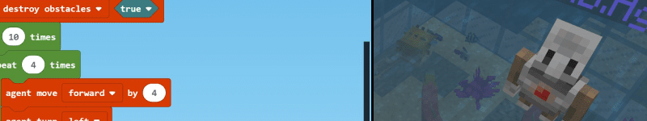

Coding with Minecraft EE¶
Build and Solve a Maze with a Minecraft Agent¶
Description¶
[ ] finish Description, Assignment competencies/replace due-dates & artifact description
Key Assignments/Dates¶
Assignment |
Competencies |
Due Date |
|---|---|---|
Getting Started with Minecraft EE |
a, b |
_ |
Making a Maze |
a, b |
_ |
Maze Pathfinding |
a, b |
_ |
Artifact |
a, b |
_ |
Assignment Descriptions¶
Getting Started with Minecraft EE¶
Minecraft EE should already be installed on the school computers. (Remember to log off when you are done!)
At a minimum, complete the tutorials for Chicken Rain, 1000TNT and Agent Pyramid
see Education Edition Setup for MakeCode for how to start Makecode Tutorials from within Minecraft EE
see Minecraft for Windows 10 Setup for MakeCode to use Code Connection and code at home with your personal version of Minecraft for Windows 10.
see Importing and Exporting Your Worlds – Minecraft: Education Edition Support for how to save a world and open it on another computer (at school or at home).
Making a Maze¶
see Making a Maze
Learning how to read and write go hand in hand. To become better at writing code yourself, it is good practice to read other people’s programs. Try to read and understand how they work. For this activity, instead of writing code, you will explore an existing program for creating a maze.
The code for this Maze Generation program is a bit more complex and developed in JavaScript. Basically, the Maze on chat command creates a 10 x 10 block of stone around the Player’s location. The Dig function will instruct the agent to dig out the maze from this block of stone. If the agent breaks through a wall in the maze, it will patch it up using the blocks in the agent’s inventory. The Shuffle function will ‘shuffle’ the directions that the agent will try digging in, to create a random maze pattern. You can preview the chat command “maze” in the blocks below:
Generate a maze from existing code¶
Launch Minecraft: Education Edition and create a new Flat world (Blocks of Grass template) in creative mode
Set the game mode to Creative, and World Type to Flat
Open MakeCode in the Code Connection app
Select the Import button in MakeCode
Select the Import URL card
Paste this URL in the text box and import the code: https://makecode.com/_9EP0Vt048K0U
Give the agent some oak wood planks in its inventory, in the upper left inventory slot. The agent will need materials to patch holes it makes in the maze. Because the agent is “learning” as it goes, it may accidentally break a block of the maze wall only to later realize we need that block. Thus, the agent then patches the hole it made by mistake. You can give the agent some wood to patch the holes.
Type the command “maze” in the chat window to see the program run. Double tap the space bar and fly up to get a bird’s-eye view of the agent while it works. It is important to stay clear while it builds the maze.
Want to know more? See: Activity: Maze Generation
Maze pseudocode (algorithm)¶
Here is the pseudocode (algorithm) for generating a maze :
Shuffle the array:
Create an array of three directions
Randomize their order
For each value in the array:
If it’s left,
turn left
If it’s right,
turn right
If there’s a wall in front of us (empty on the other side),
preserve the wall
If there’s no wall in front of us,
dig a path forward (recursively by calling the same function “dig” again)
Back up 2 spaces
Turn back to original direction
The main idea is that the agent will continue to carve an erratic path through the solid block until it reaches a blank space, trying not to destroy walls between passages. Notice that at the very end it calls the same function again in order to restart the maze carving. This is a special form of iteration known as recursion.
Build the starting and ending locations¶
For the next activity, the agent will need to know when it has successfully completed the maze. In activity 2, you will be creating some code to get the agent to navigate the maze successfully. To get set up for the next activity, you will need to prepare the starting and ending areas of the maze.
You will need to equip the player with a diamond pickaxe and redstone block. The pickaxe is to destroy the stone for the starting point and ending point. The redstone will mark the ending point. Open Terminal using ‘/‘, then type the give command to equip the player with a diamond pickaxe and a block of redstone.
/give @s diamond_pickaxe
/give @s redstone_block
Now all you need to do is build a starting and ending point.
Decide a starting point and an ending point. Most likely these will be on opposite ends of the maze.
Destroy a block at the starting point.
Destroy a block at the ending point. Place a redstone block underneath the ending point.
After destroying the grass block that marks the ending location, place a redstone block in the dirt.
In the next activity, Maze Pathfinding, you’ll have the agent stop when it detects redstone under its feet. This is how you will know it has completed the maze!
Maze Pathfinding¶
see Maze Pathfinding
Now let’s teach the agent how to navigate a maze on its own. Rather than giving the agent a set series of directional commands to solve one particular maze, you are going to need to use conditional statements to teach the agent how to find its way through any maze, intelligently.
Pathfinding pseudocode (algorithm)¶
In any maze or labyrinth, you can always find your way out by following one wall consistently. You may not find the most direct way out, but you will always come out on the other side. In a Minecraft maze, this basically means always turn left whenever you can, and when you reach a dead end, turn around.
So, our simple maze-following algorithm looks like:
As long as you aren’t standing on redstone:
If there is no block to the left of you,
turn left and move forward.
Otherwise, if there is no block in front of you,
move forward.
Otherwise, if there is no block to the right of you,
turn right and move forward.
Otherwise,
turn around and move forward.
Try to code it yourself¶
Try to code a way for the agent to get to the ending point on your own without following the activity steps. If the agent gets stuck, go ahead and use the any or all of the 10 steps below to complete the program.
1/10 Make a new project¶
Create a new MakeCode project called “Pathfinder”.
Use this starter code from the Introduction to the Agent activity. This code allows you to easily position the agent.
Move your player to the start of the maze. Type the command “tp” into the chat window. Your agent should teleport over there. Then you will need to turn the agent left(“lt”) or right(“rt”) to get it facing inwards.
2/10 First Blocks¶
Create an on chat command block and rename it to “mr” which stands for maze runner.
You’ll put the whole algorithm in a while loop, which will tell your agent to continue searching for the end of the maze as long as it isn’t standing on redstone.
From LOOPS, drag a while loop into on chat command “mr”.
From LOGIC, put a not block into the while loop replacing the true.
From AGENT, drag an agent detect into the not.
In the agent detect block, use the drop-down menu to select redstone as the type of block to detect.
In the agent detect block, use the drop-down menu to select down as the direction.
This essentially means that while the agent doesn’t detect redstone beneath it, your code will continue running.
3/10 Check for a path to the left¶
Next, we’ll check to see if there is a path open to the left and if so, turn left and move forward.
From LOGIC, drag an if then else block into the while loop.
Again from LOGIC, drag a not block into the if then conditional slot replacing the true block.
From AGENT, drag an agent detect into the not block.
In the agent detect block, use the drop-down menu to select left as the direction to look.
4/10 Turn and move forward¶
If the Agent doesn’t detect a block to its left, then we want the Agent to turn left and move forward.
From AGENT, drag an agent turn, and an agent move block into the first branch of your if then.
5/10 Check for a path forward or to the right¶
Now we need to add 2 more conditions to check forward and to the right of the Agent.
Click the Plus (+) sign at the bottom of the If then else block twice, to add 2 more Else if clauses.
6/10 Duplicate Conditions for the Other Branches of Your If¶
Right-click on the not block in the first If then conditional slot, and select Duplicate – do this twice to create two more not agent detect conditions.
Drop these duplicated conditions into the two additional else if slots.
In the second branch of the else if, use the drop-down menu to select forward as the direction to check. Thus, we are checking left and then forward.
In the third branch of the else if, use the drop-down menu to select right as the direction to check. Thus, we are checking left, forward, and then right.
7/10 Move ahead forward¶
If the agent doesn’t detect a block in front of it, then it should simply move forward.
From AGENT, drag an agent move block into the second branch of the else if clause.
8/10 Move along to the right¶
If the agent doesn’t detect a block to its right, then the agent should turn right and move forward.
From AGENT, drag an agent turn, and an agent move block into the third branch of the else if clause.
In the agent turn block, use the drop-down menu to select right as the direction to turn.
9/10 Turn around and go backward¶
Finally, if the agent is at a dead-end (none of the three directions are open), you want the agent to turn around and head back in the opposite direction.
From AGENT, drag the following 3 blocks into the last else clause: 2 agent turn blocks, and an agent move block.
10/10 Found the redstone!¶
If the agent detects Redstone, it will know it has reached the finish. You can have the agent do a happy dance at the end of the maze! Feel free to reuse the code from the Dance Dance Agent activity in Lesson 5: Iteration.
To run the code for on chat command “dance”, place a run chat command “” block from PLAYER underneath and outside the while loop. It should read run chat command “dance” when you are finished.
Using run chat command “dance” is like making a function call. You could use a function here instead if you wanted to.
Complete program¶
IF you want to compare your code against another version, check out: Pathfinder
Want to know more? See: Activity: Maze Pathfinding
Artifact¶
Download, complete and submit the Minecraft EE Agent Coding Final Artifact MinecraftEE Coding.pptx - Google Drive
Final Artifact: Minecraft EE Agent Coding¶
Instructions¶
In the attached PowerPoint, use screen captures of parts of the code you used for the Minecraft EE “Make A Maze” / “Pathfinding” tutorials to demonstrate how you APPLIED the following elements of code:
Sequence (order matters)
Variables (boxes of memory to hold values)
Conditionals (questions and choices)
Iterations (loops)
Functions (mini-programs)
As well, EXTEND your previous answer to demonstrate the following Computational Thinking practices:
Decomposition (what was the problem; what smaller pieces did you break it into?)
Pattern Recognition (what parts is the problem made of; what actions repeat?)
Abstraction (in what ways did you make one thing that can be used in more than one situation?)
Algorithms (what “recipes” did you make; what “problems” did they solve?)
Student work¶
Rubric: ADST Man-Fab¶
| |NO EVIDENCE | 0 | Beginning | 1 | Developing | 1 | Applying | 1 | Extending | 1 | | — | — | — | — | — | — | — | — | — | — | | Computational Thinking: Elements of Code (Sequence, Variables, Conditionals, Iterations, Functions & Arrays) | No evidence presented | | | | Some of the six elements of code present (arrays not necessary) | | Five of six elements of code present | | Generalize elements of code use from this project to other projects| | | | Computational Thinking: the Four Practices (Decomposition, Pattern Recognition, Abstraction & Algorithms) | No evidence presented | | Identify and define the computational thinking practices | | Describe some computational thinking practices using code blocks with short descriptions | | Explain all computational thinking practices (using code blocks with short descriptions) | | Generalize computational thinking practices from this project to other projects | |